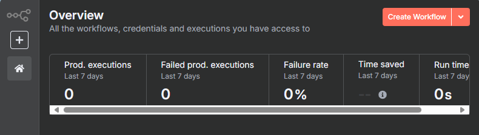
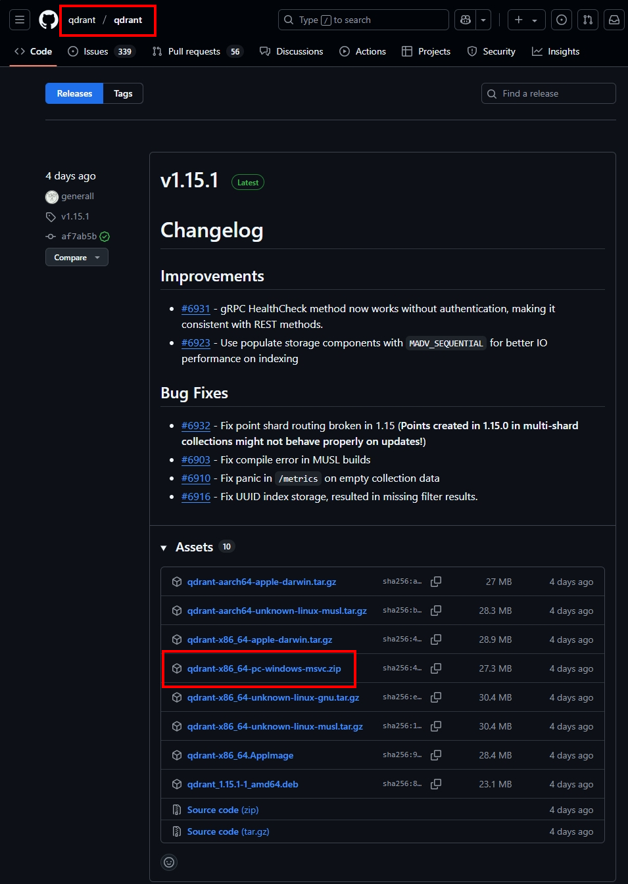

歡迎來到我的 n8n 教學頁面。這裡將會從一個純樸鄉下人的角度介紹 n8n 相關的實用但不炫酷的教學內容。
n8n 教學 (一)：本地安裝 node.js 與 n8n

本篇教學將帶領您從零開始，完成 Node.js 與 n8n 的本地環境建置，為後續的自動化工作流打下基礎。
查看詳情
n8n 教學 (二)：Supabase 申請及建立向量資料庫

本篇教學將引導您申請 Supabase 帳號，並建立向量資料庫，為 AI 應用提供資料儲存基礎。
查看詳情
n8n 教學 (三)：申請 Gemini API key

本篇教學將指導您如何申請 Google Gemini API Key，這是啟用 AI 相關功能的重要步驟。
查看詳情
n8n 教學 (四)：建立 n8n 工作流塞爆向量資料庫

本篇教學將教您如何建立 n8n 工作流，將大量資料高效地匯入向量資料庫，並處理重複資料。
查看詳情
n8n 教學 (五)：讓AI參考向量資料庫回答

本篇教學將展示如何配置 n8n，讓 AI 能夠參考向量資料庫中的資訊來生成更精確、更符合語境的回答。
查看詳情
n8n 教學 (六)：[第六篇教學標題]

本篇教學將展示如何 [第六篇教學描述]。
查看詳情